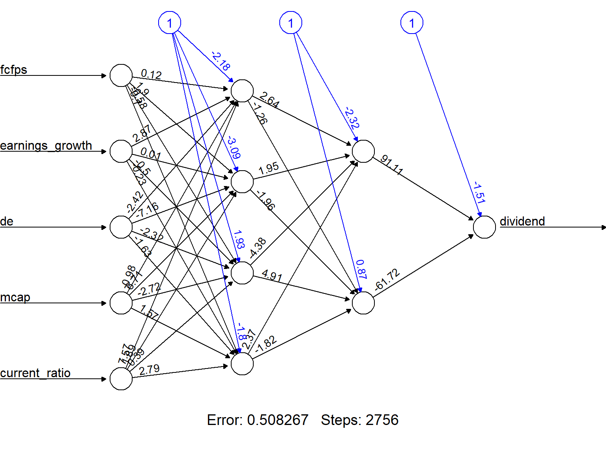

Code
if (!require(neuralnet))
install.packages("neuralnet", dep=TRUE)Adapted by EVL, FRC and ASP
May 9, 2026
neuralnet packageWe use the neuralnet package to build a simple neural network to predict if a type of stock pays dividends or not.
And use the dividendinfo.csv dataset from https://github.com/MGCodesandStats/datasets
'data.frame': 200 obs. of 6 variables:
$ dividend : int 0 1 1 0 1 1 1 0 1 1 ...
$ fcfps : num 2.75 4.96 2.78 0.43 2.94 3.9 1.09 2.32 2.5 4.46 ...
$ earnings_growth: num -19.25 0.83 1.09 12.97 2.44 ...
$ de : num 1.11 1.09 0.19 1.7 1.83 0.46 2.32 3.34 3.15 3.33 ...
$ mcap : int 545 630 562 388 684 621 656 351 658 330 ...
$ current_ratio : num 0.924 1.469 1.976 1.942 2.487 ...Finally we break our data in a test and a training set:
We train a simple NN with two hidden layers, with 4 and 2 neurons respectively.
First we deine the parameters and hyperparameters
# Neural Network
library(neuralnet)
nn <- neuralnet(#dividend ~ .,
dividend ~ fcfps + earnings_growth + de + mcap + current_ratio,
data=trainset,
hidden=hidden_layers,
act.fct=activation_function,
algorithm=optimizer,
learningrate=learning_rate,
linear.output=FALSE,
threshold=threshold_value,
stepmax=max_iterations)The output of the procedure is a neural network with estimated weights.
In order to facilitate visualization we can round decimals to 2 for all weights.
round_weights <- function(nn_model, decimals=2) {
nn_model$weights <- lapply(nn_model$weights, function(layer) {
lapply(layer, function(weight_matrix) {
if (is.numeric(weight_matrix)) {
round(weight_matrix, decimals)
} else {
weight_matrix
}
})
})
return(nn_model)
}
# Apply function to trained net
nn_rounded <- round_weights(nn, 2)
# View network with less decimals
plot(nn_rounded, rep = "best")
actual prediction
9 1 1.000000e+00
19 1 9.999167e-01
22 0 1.184302e-26
26 0 4.282788e-09
27 1 3.686182e-03
29 1 9.999999e-01 prediction
actual 0 1
0 35 1
1 7 24The caret package can be used to provide a better confusion matrix.
# Round predictions to obtain binary values (0 or 1)
roundedresults <- sapply(results, round, digits=0)
roundedresultsdf <- data.frame(roundedresults)
# Convert variables to factors for proper processing in `caret`
roundedresultsdf$actual <- as.factor(roundedresultsdf$actual)
roundedresultsdf$prediction <- as.factor(roundedresultsdf$prediction)
# Load caret package (install if not available)
if (!require(caret)) install.packages("caret", dependencies=TRUE)
library(caret)
# Generate confusion matrix with advanced metrics
conf_matrix <- confusionMatrix(roundedresultsdf$prediction, roundedresultsdf$actual)
# Print the confusion matrix and performance metrics
print(conf_matrix)Confusion Matrix and Statistics
Reference
Prediction 0 1
0 35 7
1 1 24
Accuracy : 0.8806
95% CI : (0.7782, 0.947)
No Information Rate : 0.5373
P-Value [Acc > NIR] : 1.956e-09
Kappa : 0.7566
Mcnemar's Test P-Value : 0.0771
Sensitivity : 0.9722
Specificity : 0.7742
Pos Pred Value : 0.8333
Neg Pred Value : 0.9600
Prevalence : 0.5373
Detection Rate : 0.5224
Detection Prevalence : 0.6269
Balanced Accuracy : 0.8732
'Positive' Class : 0
CaretThe Caret package offers an alternative to neuralnet to perform a more efficient process.
Data can be normalized using using caret’s preProcess function
Test/Train splitting is automated
Model variability can be managed by crossvalidation
# Train a neural network model using caret's `train` function
set.seed(12345)
nn_model <- train(dividend ~ ., data = trainset,
method = "nnet", # Use neural network model
trControl = ctrl, # Cross-validation
tuneGrid = expand.grid(size = c(4, 2), decay = 0.01), # Hidden layers, weight decay
maxit = 1000, # Max iterations
trace = FALSE) # Suppress output during training
# Print model summary
print(nn_model)Neural Network
134 samples
5 predictor
No pre-processing
Resampling: Cross-Validated (10 fold)
Summary of sample sizes: 120, 120, 121, 121, 120, 120, ...
Resampling results across tuning parameters:
size RMSE Rsquared MAE
2 0.2009342 0.8309003 0.1048632
4 0.2007985 0.8313619 0.1021993
Tuning parameter 'decay' was held constant at a value of 0.01
RMSE was used to select the optimal model using the smallest value.
The final values used for the model were size = 4 and decay = 0.01.Once the model is trained we can proceed as usually
# Make predictions on test set
y_pred <- predict(nn_model, testset)
# Convert predictions to binary (0 or 1)
y_pred_bin <- ifelse(y_pred > 0.5, 1, 0)
# Convert actual values and predictions to factors for confusion matrix
testset$dividend <- as.factor(testset$dividend)
y_pred_bin <- as.factor(y_pred_bin)
# Generate confusion matrix and performance metrics
conf_matrix <- confusionMatrix(y_pred_bin, testset$dividend)
# Print confusion matrix and evaluation metrics
print(conf_matrix)Confusion Matrix and Statistics
Reference
Prediction 0 1
0 34 4
1 1 27
Accuracy : 0.9242
95% CI : (0.832, 0.9749)
No Information Rate : 0.5303
P-Value [Acc > NIR] : 3.522e-12
Kappa : 0.8471
Mcnemar's Test P-Value : 0.3711
Sensitivity : 0.9714
Specificity : 0.8710
Pos Pred Value : 0.8947
Neg Pred Value : 0.9643
Prevalence : 0.5303
Detection Rate : 0.5152
Detection Prevalence : 0.5758
Balanced Accuracy : 0.9212
'Positive' Class : 0
Notice that the model shows slightly better than the first one, probably due to the fact that it has been minimally optimized.